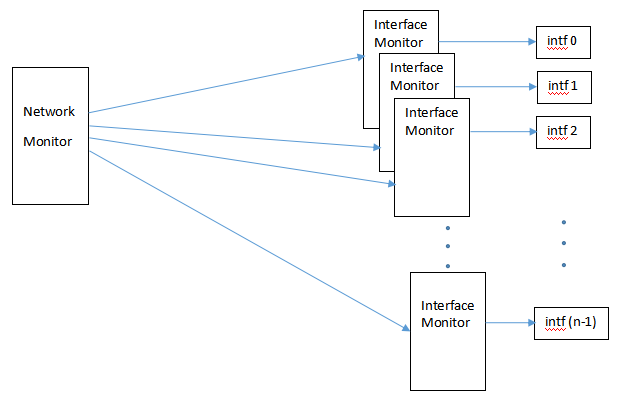
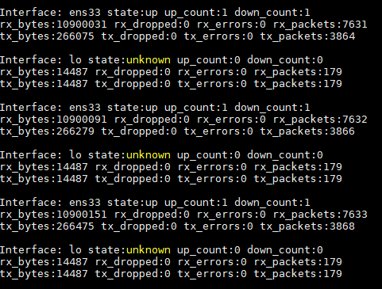

UNX511 – Assignment 1: A Network Monitor
Due: Friday, November 13, 2020
Business Case (Marketing, Project Manager, Senior Executives)
Your job will be to create a network monitor, which monitors the performance of all network interface devices.
Monitoring network interfaces can help in debugging system problems as well as in enhancing system performance
through a central intelligent networking device.
Currently on our virtual machine, we have two network interfaces: ens33 and lo. On other machines such as routers,
there may be as many as 64 network interfaces, some of them running in the order of 10GBits/second. For routers
and other networking equipment, it is crucial to know the performance of each interface and to control each interface,
therefore we are going to create a network monitor.
Requirements (Marketing, Project Manager, Project Lead)
- Our network monitor must be able to monitor any set of network interfaces requested by the user.
- The statistics for each network interface can be found under Linux’s /sys directory, specifically /sys/class/net/<interface-name>.
The /sys directory is another directory like /proc and /dev which can be accessed to set or obtain information about the kernel's view of the system.
The statistics to be monitored are:
The operating state – operstate
The up-count (number of times the interface has been up) – carrier_up_count
The down-count (number of times the interface has been down) – carrier_down_count
The number of received bytes – rx_bytes
The number of dropped received bytes – rx_dropped
The number of erroneous received bytes – rx_errors
The number of received packets – rx_packets
The number of transmitted bytes – tx_bytes
The number of dropped transmitted bytes – tx_dropped
The number of erroneous transmitted bytes – tx_errors
The number of transmitted packets – tx_packets
- If an interface goes down (see operstate) then your network monitor must set it back up.
- Your network monitor must shut down gracefully. That means it must intercept a ctrl-C to shutdown the program.
The shutdown might include the following – close file connections, deallocate memory, etc…
- The network monitor will act synchronously. It will not instantly react to any changes in the statistics. Rather, it will poll the statistics every one second.
- Your network monitor will print out the following once every second for each network interface:
Interface:<interface-name> state:<state> up_count:<up-count> down_count:<down-count>
rx_bytes:<rx-bytes> rx_dropped:<rx-dropped> rx_errors:<rx-errors> rx_packets:<rx-packets>
tx_bytes:<tx-bytes> tx_dropped:<tx-dropped> tx_errors:<tx-errors> tx_packets:<tx-packets>
Design (Project Lead, Senior Engineers)
There are two parts to the design – the interface monitor and the network monitor itself.
There may be one or more interface monitors but there is only one network monitor.
The Interface Monitor
Each interface will have a process dedicated to it. This is called the interface monitor. For instance, if there are three network
interfaces on a Linux machine, three instances of the interface monitor process will be running. Each interface monitor will:
- Communicate with the network monitor through a temporary socket file in the /tmp directory.
- Inform the network monitor when it is ready to start monitoring.
- Monitor and print out the statistics for a given interface as per instructed by the network monitor.
- Report to the network monitor if its interface does down.
- Be able to set an interface link up as per instructed by the network monitor.
- Perform a controlled shutdown if it receives a ctrl-C of if instructed by the network monitor by closing the socket connection to the network monitor then exiting.
The Network Monitor
The network monitor controls all interface monitors running on the system. In a software defined network,
it is common to centralize all intelligence in one spot in order to coordinate the operations of all network devices. In our case, intelligence is centralized in the
network monitor and the work is done by the interface monitors. The network monitor will:
- Query the user for the number of interfaces and the name of each interface.
- It will create and bind a socket to a temporary socket file in the /tmp directory.
- It will maintain separate socket connections to each interface monitor.
- Once an interface is ready, the network monitor will instruct the interface monitor to monitor and print out the statistics for its interface once every second.
- If the interface monitor indicates that its link is down, the network monitor will instruct the interface monitor to put the link back up.
- On shutdown, the network monitor will intercept the SIGINT interrupt (ctrl-C, kill -2), send a shut down message to each interface monitor, close all connections, then exit.

Implementation (Junior and Senior Engineers)
- The network monitor will communicate with each of its interface monitors through a socket file in the /tmp directory.
- The network monitor will create and bind a socket to a temporary socket file in the /tmp directory. This will be its master file descriptor.
- The network monitor will listen with the master file descriptor.
- The network monitor will fork() and exec() all the interface monitors, providing the interface name as an argument to each interface monitor.
- The interface monitor will create a socket and attempt to connect to the socket file in the /tmp directory.
- The network monitor will now accept all connections storing the file descriptor of each connection in an FD_SET.
- The network monitor now has its master file descriptor and a descriptor for each connection with its interface monitors.
- Each interface monitor has now connected to the network monitor.
The communications between the network monitor and its interface monitors is synchronous, in that whenever the network monitor writes to
an interface monitor, it waits to read something back before writing again.
The communications between the network monitor and its interface monitors is with select. When the network monitor receives a message,
it has to search through its list of connections to see which interface monitor it is communicating with.
The protocol between the network monitor and the interface monitor is as follows:
- Once the network monitor has received a set of interfaces from the user, the network monitor starts up each interface monitor via fork() and exec() as follows:
./intfMonitor <interface-name>
- The network monitor waits for a connection request from each interface monitor.
- The interface monitor writes “Ready” to the network monitor through a socket.
- The network monitor writes “Monitor” to the interface monitor to monitor and print out the statistics of a given interface once per second.
The interface monitor responds by writing “Monitoring” to the network monitor.
- If a link goes down, the interface monitor writes “Link Down” to the network monitor, in which case the network monitor will send “Set Link Up” to the interface monitor.
- If the interface monitor receives “Set Link Up” from the network monitor, it will execute an IOCTL command to set the link back up.
If the IOCTL command fails, the interface monitor will print out the system error message.
(see linux-programmatically-up-down-an-interface-kernel)
- If the network monitor receives a SIGINT (ctrl-C, kill -2), it will send a “Shut Down” message to each interface monitor, close all of its connections, and exit. The network monitor
might not be able to shut down each interface monitor by a socket command if the interface monitor is in the middle of monitoring statistics. You might prefer that
the network monitor send a SIGINT to each interface monitor instead.
- If the interface monitor receives a SIGINT or a “Shut Down” message from the network monitor, it will write “Done” to the network monitor (if possible), close the connection and exit.
- If the network monitor is still alive and receives “Done” from an interface monitor, it will close that socket connection.
Monitoring statistics for each interface is quite simple. Each interface monitor simply has to open each file in the /sys/class/net/<interface-name>
directory and read one value. No parsing is necessary.
Testing and Rework (Junior and Senior Engineers, Product Support)
- You might have to run your network monitor as super user:
$ sudo ./networkMonitor
- You may wish to insert a DEBUG flag in your Makefile and in your code to perform debug printf’s/cout’s while debugging.
If you make your code with your debug flag, then code within the following blocks will be executed:
#ifdef DEBUG
cout<<"DEBUG:..."<<endl
#endif
When you are satisfied with your code, you can build your code without the debug flag.
- When you run your network monitor, compare the statistics that is printed out with the values in the /sys/class/net/<interface-name> directory.
- When you run your network monitor, compare the statistics that is printed out with those shown with $ ifconfig.
- To test the link down/link up feature of your interface monitor, put a link down (for example lo) with the following command from the command line:
$ sudo ip link set lo down
Your interface monitor should indicate that the link is down temporarily, then indicate when it has come back up. Your up_count and down_count should each increment by one as well.
- A correctly running network monitor will look something like:

Questions
- In a few sentences, describe the general architecture of your interface monitor. [0.5 mark]
- In a few sentences, describe the general architecture of your network monitor. [0.5 mark]
- Could the interface monitor and network monitor all be contained within one process, if so how? [0.5 mark]
- Could the interface monitor and network monitor all be contained within one process, assuming 128 network
interfaces running at several Giga-bits per second, which require a polling interval of one millisecond per interface. [0.5 mark]
- What is a software defined network? In doing so, describe the applications layer, the control layer, and the forwarding layer. [2 marks]
Timeline
Days 1-7: Complete and test the interface monitor as a stand-alone unit.
Days 8-14: Complete the network monitor with socket interface to the interface monitor.
Days 15-21: Test and Rework. Answer Questions. Submit Assignment.
Marking Rubric
Assignment 1 is worth 15% of your final grade and as such is marked out of 15 as follows:
| Does not meet expectations | Satisfactory | Good | Exceeds Expectations |
|---|
Interface Monitor
(4 marks) | Does not meet requirements | Meets the most important requirements | Meets all requirements with minor errors | Meets all requirements with no errors |
Network Monitor
(4 marks) | Does not meet requirements | Meets the most important requirements | Meets all requirements with minor errors | Meets all requirements with no errors |
Documentation
(3 marks) | Does not contain documentation | Contains header documentation for either all files or for all functions within each file |
Contains header documentation for all files and for most functions within each file | Contains header documentation for all files and for all functions within each file.
Documents unclear code. |
Questions
(4 marks) | Answers no question correctly | Answers some questions correctly |
Answers most questions correctly | Answers all Questions correctly |
Submission
Please email all source code and answers to questions to:
miguel.watler@senecacollege.ca
NB: My last name is Watler, not Walter.
Your questions can be submitted in a separate document or embedded within your source code.
Late Policy
You will be docked 10% if your assignment is submitted 1-2 days late.
You will be docked 20% if your assignment is submitted 3-4 days late.
You will be docked 30% if your assignment is submitted 5-6 days late.
You will be docked 40% if your assignment is submitted 7 days late.
You will be docked 50% if your assignment is submitted over 7 days late.